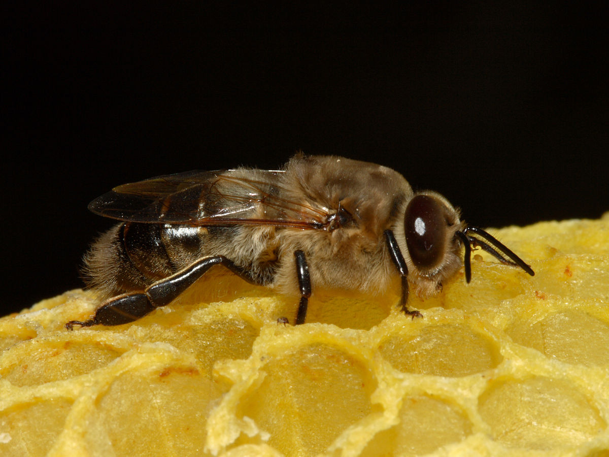
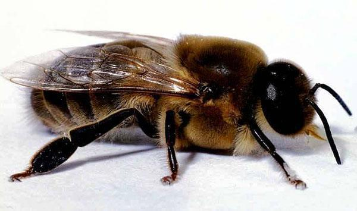
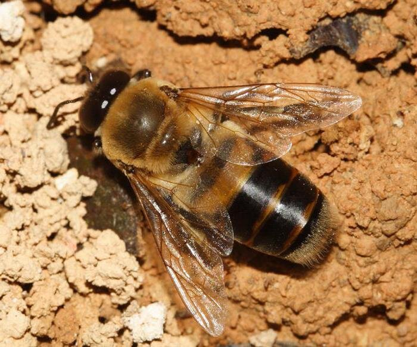

Трутни
Трутни, или самцы пчёл, являются одной из ключевых частей пчелиной колонии, играющей важную роль в жизненном цикле и размножении пчёл. Эти уникальные особи пчёл обладают особыми характеристиками и функциями, которые делают их важными участниками в жизни улья.

Трутни обладают особым внешним видом и поведением, которые отличают их от других особей пчелиной колонии. Изучение их уникальных характеристик позволяет лучше понять функциональность пчелиной семьи в целом и оптимизировать работу улья.
Кроме того, роль трутней в разведении новых поколений пчёл имеет важное значение для устойчивости и процветания пчелиной колонии. Они играют ключевую роль в процессе оплодотворения маток, обеспечивая генетическое разнообразие и адаптацию к изменяющимся условиям окружающей среды.
В контексте современного пчеловодства, понимание роли и значимости трутней становится все более важным для эффективного управления пчелиной колонией и поддержания здоровья пчёл. Исследования и практические приложения, связанные с трутнями, имеют большое значение для развития селекции, укрепления пчелиных семей и обеспечения устойчивости пчеловодства в целом.
Физические характеристики:
Трутни - это самцы пчёл, отличающиеся от рабочих особенностями как внешнего вида, так и физиологии. По сравнению с рабочими пчёлами, трутни обычно крупнее и более массивные. Их тело имеет плотную и округлую форму, что делает их более мощными и менее подвижными в сравнении с рабочими пчёлами. Размеры трутней обычно составляют от 15 до 17 мм в длину, что существенно больше, чем у рабочих пчёл.
Внешний вид:
Трутни имеют более круглую форму тела, чем рабочие пчёлы, и часто выглядят более пузатыми. У них также более крупные глаза, чем у рабочих, что помогает им лучше ориентироваться в пространстве и находить маток во время свадебных полётов. В отличие от рабочих пчёл, у трутней нет жалка, что делает их более безопасными для человека.

Особенности поведения и роли в пчелиной колонии:
Трутни выполняют важные функции в пчелиной колонии, основная из которых - разведение новых пчелиных маток. В период своей жизни они совершают свадебные полёты за пределы улья, в поисках девственных маток, с которыми они спариваются в воздухе. Этот процесс необходим для оплодотворения маток и обеспечения генетического разнообразия в пчелиной популяции.
Отличия от рабочих пчёл и маток:
Наиболее очевидным отличием трутней от рабочих пчёл и маток является их размер и внешний вид, а также отсутствие у них жалка. Кроме того, трутни не выполняют таких задач, как сбор нектара и пыльцы или уход за потомством, как рабочие пчёлы. Их главная функция - это разведение новых маток, что делает их ключевыми для генетического разнообразия и продолжения пчелиной колонии.
Трутни играют ключевую роль в размножении пчелиной колонии, обеспечивая оплодотворение пчелиных маток. Их основной функцией является участие в процессе свадебных полётов и спаривание с девственными матками в воздухе. Вот более подробное описание их размножительной функции и других важных ролей:

Свадебные полёты и спаривание:
Трутни выходят из улья во время свадебных полётов, чаще всего в тёплое время суток и в тёплое время года. Во время этих полётов они активно ищут девственных маток для спаривания. Спаривание происходит в воздухе, после чего трутни погибают. Этот процесс обеспечивает оплодотворение маток и гарантирует генетическое разнообразие в пчелиной популяции.
Обеспечение генетического разнообразия:
Спаривание с различными трутнями позволяет маткам получать генетически разнообразное потомство. Это имеет важное значение для здоровья и выживаемости пчеловодного сообщества, так как обеспечивает адаптацию к различным условиям окружающей среды и повышает устойчивость к различным угрозам, таким как паразиты и болезни.
Участие в селекционной работе:
Трутни могут быть использованы в селекционной работе пчеловодов для улучшения определенных генетических характеристик ульев. Путём контролируемого спаривания можно создавать новые гибриды и линии пчёл с желаемыми свойствами, такими как устойчивость к заболеваниям, высокая продуктивность и т.д.